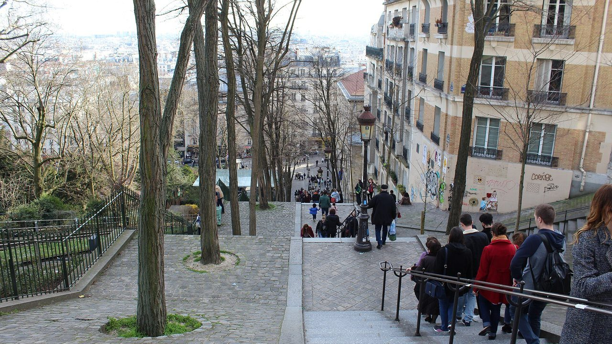

Race, Montmartre

Behind
Best +0:01
371W
Target 418 W-47 W
- Cadence
- 87rpm
- Heart
- 140bpm
- Speed
- 26.5km/h
Work12 of 16
0:40
Next: · 1:00 at level 11
+6.5%
386 m climbed
6.02 km
22
Resistance / 32
Solo races your best-time ghost: position reads Ahead or Behind, and solo alone gets a Pause button. Frozen at 14:20.